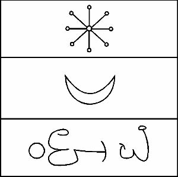

NANNA’nın sayısı otuzdur ve işte onun mührü:

Merkür’ün Tanrısı NEBO’dur. Uzun bir sakalı olan çok yaşlı bir ruhtur ve Bilimin bilgisinin saklayıcısı olduğu gibi Tanrıların da koruyucusudur. Yüz boynuzlu bir taç takar ve Rahibin uzun giysisini giyer. Rengi mavidir. Özü, civa olarak bilinen madende ve bazen de kumda, civanın işaretini taşıyan şeylerde bulunabilir. Onun kapısı, takip eden ritüellerle ikinci olarak geçmen gerekendir. Işıklar Merdivenindeki Basamağı mavidir.
Bu, kusursuz bir parşömen üzerine ya da palmiye ağacının geniş yaprağına, etrafında seni bunu imal ederken görebilecek kimsenin olmadığı bir anda yazman gereken, onun mührüdür. Bittiğindeyse, kare şeklinde en güzel ipeğe sarılmalı ve kullanmayı arzu edeceğin zamana kadar orada yatırılmalıdır ve sonra, yalnızca onun ışığı gökyüzündeyken yerinden çıkarılmalıdır. Bu, aynı zamanda, onun imal edilmesi için de en iyi zamandır.